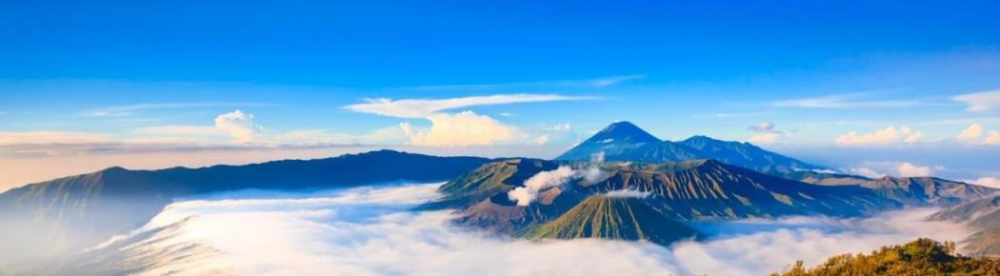
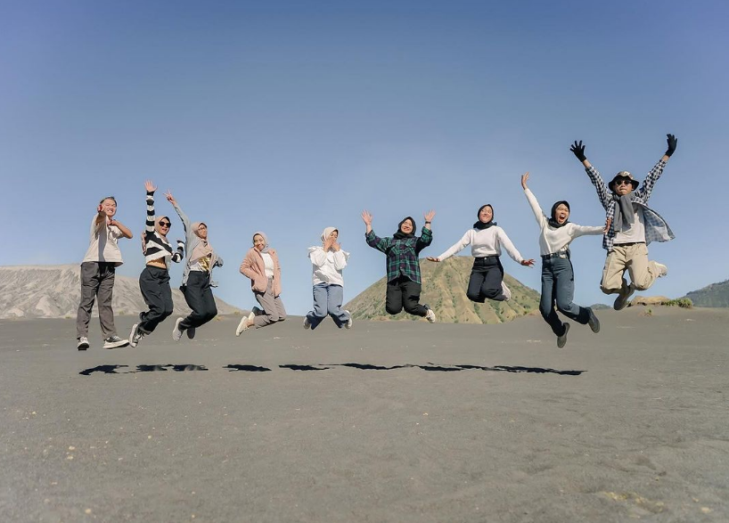

Pariwisata Taman Nasional Bromo Tengger Semeru Malang,Jawa Timur
Taman Nasional Bromo Tengger Semeru adalah kawasan pegunungan di Jawa Timur, Indonesia,
yang terletak di wilayah administratif Kabupaten Pasuruan, Kabupaten Malang, Kabupaten
Lumajang dan Kabupaten Probolinggo. Pada tanggal 12 November 1992, pemerintah Indonesia meresmikan kawasan Bromo Tengger
Semeru menjadi taman nasional.Taman Nasional Bromo Tengger Semeru merupakan gabungan dari beberapa kawasan yang disatukan.
Kawasan tersebut sebelumnya merupakan cagar alam,taman wisata,hutan produksi dan hutan lindung Sehingga banyak agen-agen yang
membuka travel tour untuk ke wisata Gunung Bromo.Pesona menakjubkan dari Gunung Bromo di Jawa Timur
sudah terkenal hingga ke telinga wisatawan mancanegara.Keindahan alam yang disuguhkan gunung ini tidak main-main.
Sejauh mata memandang hanya ada alam hijau yang asri.Selain itu, banyak pula tempat wisata yang wajib kamu kunjungi saat
mendaki Gunung Bromo. Mulai dari perbukitan hijau hingga padang rumput,semua menawan di sini.Dijuluki Puncak Para Dewa,
berikut tempat wisata di Gunung Bromo yang tak boleh kamu lewatkan dan yang biasa jasa tour yang dikunjungi.
Bikin kamu betah menjelajah, deh!.Mari kita simak penjelasan dibawah ini!
PAKET TRIP BROMO
Dibanding pergi sendiri ke Gunung Bromo Malang dengan angkutan umum, paket wisata Bromo jauh lebih diminati karena
kemudahan yang diberikan. Dengan paket wisata Bromo, baik open trip Bromo maupun private trip, kamu hanya tinggal
menikmati perjalanan karena kamu tinggal menunggu di meeting point untuk penjemputan oleh pihak operator tour.
Kamu enggak perlu lagi memikirkan soal rute untuk pergi ke kawah Bromo dan mencari angkutan umum yang bisa mengantar
ke area Taman Nasional Bromo Tengger Semeru. Tinggal duduk, menikmati pemandangan sepanjang perjalanan, lalu sampai di tujuan.
Jika tertarik mengikuti paket tour ke Bromo, ada banyak opsi yang bisa kamu pilih di Klook. Tiap opsi punya variasi aktivita yang bisa kamu
pertimbangkan Terdapat dua opsi tour yang bisa kamu ikuti: private trip atau open trip Bromo. Jika kamu pergi
beramai-ramai dengan teman-teman atau menginginkan tour yang privat tanpa orang asing, private trip tentu jadi pilihan ideal.

Open Trip Bromo Midnight berangkat setiap hari dari Kota Malang dan Batu serta setiap hari Sabtu dari Kota Surabaya
tanpa minimal kuota, Kami ajak anda menjelajahi kawasan "Puncak para Dewa" dalam waktu satu hari atau kurang lebih selama
12 jam. Dari ketinggian 2.392 mdpl (meter diatas permukaan laut) mengejar Golden Sunrise terbaik di Indonesia dan Explore
Kawasan Kawah Bromo yang meliputi 6 point interest di 4 spot populer yang dikenal akrap oleh kebanyakan wisatawan lokal
maupun manca negara.Open Trip atau Wisata Gabungan Bromo Midnight adalah paket wisata murah untuk berbagi biaya dengan
peserta atau teman perjalanan lainnya. Open Trip adalah cara mudah untuk berhemat dalam biaya sebuah perjalanan wisata,
satu orang bisa mendaftar tanpa minimal kuota dalam Paket Open Trip dan bergabung dengan peserta lainnya.Pada Open Trip Bromo
Midnight kali ini, anda tidak hanya menyaksikan keindahan Bromo saat matahari terbit, tapi untuk 6 point interest lainnya di satu
kawasan Bromo yang luas ini, setelah menyaksikan indahnya matahari terbit di Pananjakan 1, menuju Bukit Cinta, Spot Foto Widodaren,
trekking menuju kekuatan alam Kawah Bromo, di lanjutkan dengan melihat dari dekat Pura Luhur Poten, melintasi "Pasir Berbisik" dan
berfoto ria di Bukit Teletubbies.
Klik Untuk Info Selanjutnya
Private Trip Bromo adalah agenda berwisata ke Gunung bromo sama halnya dengan Open trip Bromo.
Yang membedakan adalah Jika open trip bromo biaya jeep dan lain – lain akan menjadi tanggungan bersama dengan wisatawan lainnya yang
bukan dari rombongan anda. Sedangkan jika Private Trip anda hanya akan melakukan agenda tour Bromo dengan wisatawan atau rombongan
dari pihak anda sendiri. Misalkan ada 3 orang rombongan anda yang ingin melakukan perjalanan wisata ke Gunung Bromo. Maka 1 Jeep
yang notabene nya diisi maksimal 6 Orang. Maka 1 jeep tersebut hanya akan diisi 3 Orang saja, yaitu rombongan wisata anda.
Mengapa Harus Ke Gunung Bromo??Tempat wisata gunung bromo tentu sudah
tidak asing lagi di telinga kita, apalagi untuk orang Indonesia. Pesona dan keunikan bromo sudah terkenal sampai ke seluruh penjuru dunia.
Setiap tahun ada ribuan wisatawan asing yang datang ke Bromo, para pelancong itu datang dari Amerika, eropa dan sebagain besar dari Asia.
Gunung bromo yang terletak di Provinsi Jawa Timur, Indonesia.Lokasinya berada di empat kabupaten sekaligus membuat akses ke bromo semakin mudah ditempuh karena banyak jalur alternative yang dapat dilalui
jika mau datang ke bromo.Sebagai obyek wisata, Bromo menjadi menarik karena statusnya sebagai gunung berapi yang masih aktif.
Gunung Bromo termasuk dalam kawasan Taman Nasional Bromo Tengger Semeru. Klik Untuk Info Selanjutnya